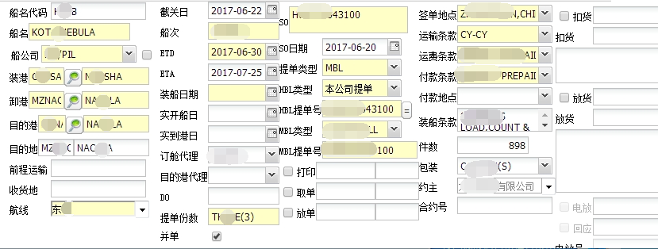
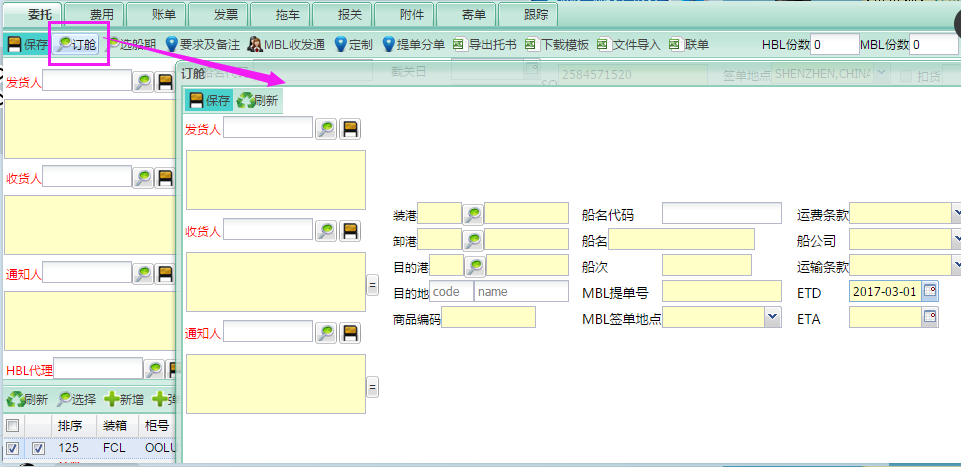
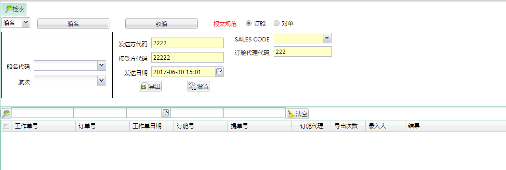

1.录系统：
船名代码，SO日期，ETD ,ETA，约主，MBL 类型，航线，签单地点
装港代码，卸港代码，目的港代码，目的地代码----不超过5个字母,起运港代码可以用附件POL CODE 资料查询
货描处需要加上: FREIGHT PREPAID 或者 FREIGHT COLLECT ，否则提单上显示不出来，其他正常录入

2.订舱界面：
需要提交的发货人，收货人，通知人要录在订舱这里；HS CODE 可以用附件资料查询

3.EDI 界面 -- EDI-PIL：
船名代码处输入船名，选择正确的船名后，点击检索 -- 报文规范处现在对单 -- SALES CODE,看SO 上的SALES REP --
订舱代理代码以SO 上的订舱SHIPPER 为准，填写下面代码 -- 在对应工作号前面的框框点 勾
-- 点击导出(A.导出失败,按照结果里面的指示修改资料;B.导出成功到桌面的资料，可以用记事本文件格式打开查看）
Bkg party code: CN 900140 深圳/汕头 agent code CN900139 广州
BPC: CN900303 中山 code CN108608 江苏安徽江西

4.导出成功的附件，需要发邮件给到 :cnesi.email@sgp.pilship.com （中山PIL 发到这个邮箱，其他PIL 待定） 和对应的文件邮箱
如要求显示的起运港，目的港等资料与系统显示不一样的，可以在邮件内注明
如果是拆单或者并单的话不用做ESI 的，按以前的补料就行